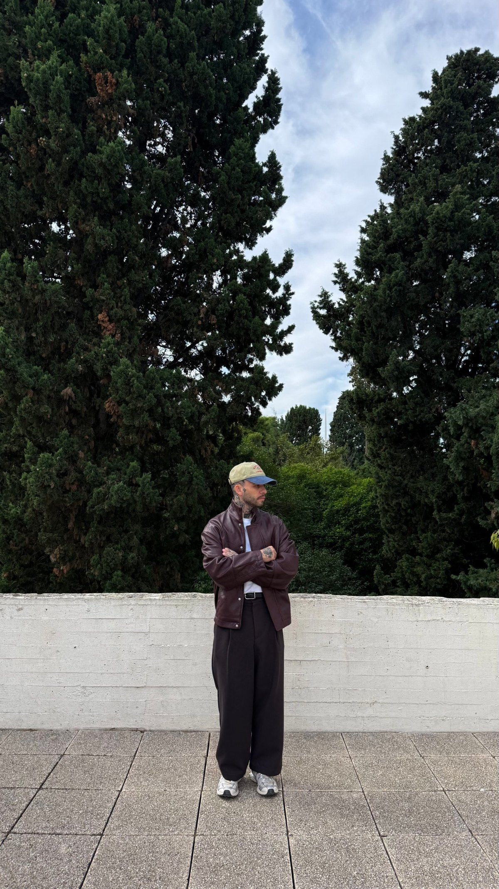

Curadoria · Garimpo
Romao
Tatuador e curador, Romao desenvolveu no ofício do desenho uma leitura apurada de linha, proporção e composição — a mesma sensibilidade que hoje conduz o acervo da Vestígio.
Antes da Vestígio, atuou para diversas curadorias na busca por móveis raros, experiência que formou o repertório e o rigor com que hoje conduz o garimpo da marca.
Seu olhar se concentra no design dos anos 70 e 80, período em que o mobiliário assumiu formas mais ousadas e passou a dialogar diretamente com a arte. Do aço tubular cromado às formas orgânicas, do couro ao vidro fumê, sua curadoria reconhece nas peças dessa época não apenas estilo, mas linguagem.
À frente da curadoria, Romao identifica, avalia e seleciona cada peça, e responde pela forma como ela é apresentada, com informação precisa sobre origem, época e estado de conservação. Ao acervo chega apenas o que reúne relevância de desenho, qualidade de matéria e força para transformar um espaço.
Instagram @_____romao